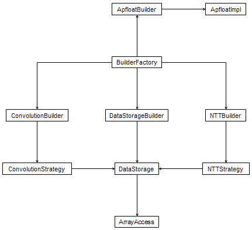

|
|||||||||
| PREV PACKAGE NEXT PACKAGE | FRAMES NO FRAMES | ||||||||
See:
Description
| Interface Summary | |
|---|---|
| ApfloatBuilder | An ApfloatBuilder contains factory methods to create
new instances of ApfloatImpl implementations. |
| ApfloatImpl | Interface for apfloat implementations. |
| BuilderFactory | A BuilderFactory object contains factory methods for building
the various parts of an apfloat using the Builder pattern. |
| ConvolutionBuilder | Interface of a factory for creating convolutors. |
| ConvolutionStrategy | Generic convolution strategy. |
| DataStorageBuilder | Interface for determining a suitable storage type for data of some expected size. |
| NTTBuilder | Interface of a factory for creating Number Theoretic Transforms. |
| NTTStrategy | Number Theoretic Transform (NTT) strategy. |
| RadixConstants | Constants related to different radixes. |
| Class Summary | |
|---|---|
| ArrayAccess | The ArrayAccess class simulates a C language pointer. |
| DataStorage | Generic data storage class. |
| DataStorage.Iterator | Iterator for iterating through elements of the data storage. |
| FilenameGenerator | Class for generating filenames for temporary files. |
| Util | Miscellaneous utility methods. |
The apfloat Service Provider Interface (SPI).
The apfloat API is a high-level API that defines algorithms on the level of
e.g. the Newton iteration for the inverse of a number. Behind this high-level
API there is a lot of low-level functionality that makes all the arbitrary
precision arithmetic happen. The digits of a large number are stored in an
array of ints, for example. In fact, an Apfloat
is structurally just a pointer to an ApfloatImpl, and
most of the functionality of the Apfloat class is simply delegated to the
underlying ApfloatImpl.
The apfloat SPI defines the general interface for the low-level things that must happen behind the scenes of the high-level API. An actual implementation of the SPI can be optimized for different things, for example:
int
and long type elements correspondingly most efficiently, for
example. Some systems perform floating-point operations (with
float or double type elements) faster than
integer operations (int or long).BuilderFactory
interface, and actually only the BuilderFactory.getApfloatBuilder()
method in this interface. All apfloat implementations (ApfloatImpl)
are created through the ApfloatBuilder interface's
methods. The rest of the interfaces in the SPI exist only for the convenience
of the default apfloat SPI implementations (org.apfloat.internal).The apfloat SPI suggests the usage of various patterns, as encouraged by the specification of all the interfaces in the SPI. These patterns include:
ApfloatBuilder, DataStorageBuilder,
ConvolutionBuilder, NTTBuilder).ApfloatImpl needs various
"parts" for its structural construction (DataStorage)
as well as its behavior (ConvolutionStrategy). Builders
are used to build the different sub-parts needed, and the ApfloatImpl
itself only knows the high-level algorithm for how the parts are used and
related. The construction of the sub-part details is left for the
builders, and the ApfloatImpl accesses the parts only via an interface.ConvolutionStrategy defines different convolution
algorithms to be used in the multiplication. For very large numbers, a
transform-based convolution can be used, and even a different transform
strategy can be specified via the NTTStrategy
interface.DataStorage
elements in a highly flexible manner. The base class is
DataStorage.Iterator. For example, a data storage that
uses a simple array to store the entire data set in memory can return
a simple iterator that goes through the array element by element. In
comparison, a data storage that stores the data in a disk file, can have
an iterator that reads blocks of data from the file to a memory array,
and then iterates through the array, one block at a time.BuilderFactory
class, as there should be no need to have more than one instance of each
builder class. Also the BuilderFactory instance itself is a singleton,
within an ApfloatContext.Apfloat
provides a simple high-level programming interface and the complex technical
implementation details are delegated to an ApfloatImpl.
The Apfloat class can be subclassed for additional functionality, and independent
of that, different subclasses of an ApfloatImpl can be used to optimize the
implementation.
The class implementing BuilderFactory that is used in
creating apfloat implementations is defined in the ApfloatContext.
You can set the BuilderFactory instance programmatically by calling
ApfloatContext.setBuilderFactory(BuilderFactory),
for example:
BuilderFactory builderFactory = new MyBuilderFactory(); ApfloatContext.getContext().setBuilderFactory(builderFactory);It's a lot easier to specify this to happen automatically whenever your program starts. To do this just specify the BuilderFactory class name in the
apfloat.properties file (or the apfloat ResourceBundle if you use one).
For example, the apfloat.properties file might contain the line:
builderFactory=org.mycompany.MyBuilderFactoryFor more details about configuring the apfloat BuilderFactory, see the documentation for
ApfloatContext.
org.apfloat.internal
|
|||||||||
| PREV PACKAGE NEXT PACKAGE | FRAMES NO FRAMES | ||||||||